Effective Industry Price-Volume Factors and Sector Rotation Strategy#
Industry Price-Volume Factor Screening#
Based on industry-level price-volume data, I systematically categorized price-volume factors into six distinct classifications according to their economic rationale: momentum, trading volatility, turnover rate, long-short dynamics, price-volume divergence, and volume-amplitude alignment. Through comprehensive single-factor testing—including factor quintile analysis and IC value assessment—I identified 15 statistically significant and economically meaningful monthly-rebalanced industry factors.
Robust Performance of Price-Volume Sector Rotation Strategy#
I constructed a sector rotation portfolio utilizing 15 price-volume factors. At each month-end rebalancing, the strategy selects the top five industries with the highest composite factor scores from CITIC primary industry classification (excluding Composite and Composite Financial sectors), employing equal-weight allocation among selected industries.
From 2013 to July 2025, the cumulative return of the price-volume industry rotation portfolio reached 820%, with a cumulative excess return of 200% compared to the equally weighted portfolio of all industries. The annualized return of the industry portfolio was 18.16%, with an annualized excess return of 9.50%.
import pandas as pd
from pandas import IndexSlice as idx
import numpy as np
import warnings
warnings.filterwarnings('ignore')
pd.set_option('display.max_columns', None)
import matplotlib.pyplot as plt
from matplotlib import rcParams
import math
import seaborn as sns
from matplotlib import gridspec
from scipy.stats import spearmanr
csi_daily = pd.read_parquet('data/csi_daily.parquet')
csi_daily
| open | high | low | close | volume | amount | turnover_rate | ||
|---|---|---|---|---|---|---|---|---|
| tradts | ind_code | |||||||
| 2010-01-04 | CI005001 | 2518.75 | 2547.29 | 2463.78 | 2489.62 | 44067.46 | 553515.46 | 0.51 |
| CI005002 | 3379.80 | 3394.55 | 3314.77 | 3323.37 | 22998.16 | 514704.99 | 1.16 | |
| CI005003 | 5629.37 | 5678.40 | 5550.17 | 5588.83 | 52158.09 | 990488.29 | 1.58 | |
| CI005004 | 2112.26 | 2129.36 | 2079.49 | 2091.66 | 60925.67 | 575830.69 | 0.95 | |
| CI005005 | 2478.97 | 2497.35 | 2438.47 | 2449.56 | 51282.91 | 469107.37 | 0.82 | |
| ... | ... | ... | ... | ... | ... | ... | ... | ... |
| 2025-09-25 | CI005026 | 9106.84 | 9478.07 | 9005.19 | 9368.61 | 381003.64 | 14449554.61 | 2.15 |
| CI005027 | 7873.06 | 8078.85 | 7867.45 | 7983.91 | 942996.00 | 23336288.23 | 4.55 | |
| CI005028 | 3600.94 | 3711.53 | 3600.05 | 3679.79 | 649715.91 | 8177234.42 | 4.07 | |
| CI005029 | 3193.51 | 3251.36 | 3190.80 | 3204.32 | 55800.69 | 451716.34 | 2.75 | |
| CI005030 | 953.14 | 965.43 | 949.73 | 960.61 | 30856.44 | 300938.73 | 2.49 |
112281 rows × 7 columns
# Exclude Composite and Composite Financial sectors
ind_codes = [f'CI005{i:03d}' for i in range(1, 29)]
csi_daily = csi_daily.loc[idx[:,ind_codes],:]
# Daily industry closing price data
inds_price = csi_daily['close'].reset_index().pivot(
index='tradts',
columns='ind_code',
values='close'
)
inds_price
| ind_code | CI005001 | CI005002 | CI005003 | CI005004 | CI005005 | CI005006 | CI005007 | CI005008 | CI005009 | CI005010 | CI005011 | CI005012 | CI005013 | CI005014 | CI005015 | CI005016 | CI005017 | CI005018 | CI005019 | CI005020 | CI005021 | CI005022 | CI005023 | CI005024 | CI005025 | CI005026 | CI005027 | CI005028 |
|---|---|---|---|---|---|---|---|---|---|---|---|---|---|---|---|---|---|---|---|---|---|---|---|---|---|---|---|---|
| tradts | ||||||||||||||||||||||||||||
| 2010-01-04 | 2489.62 | 3323.37 | 5588.83 | 2091.66 | 2449.56 | 3516.91 | 2734.45 | 4279.87 | 2232.66 | 4005.49 | 4606.90 | 4599.22 | 4251.24 | 4714.18 | 2803.53 | 3863.11 | 2753.92 | 4201.69 | 5611.13 | 3430.91 | 4237.01 | 6966.97 | 4403.52 | 1864.59 | 1949.03 | 2601.43 | 2128.37 | 2094.18 |
| 2010-01-05 | 2529.68 | 3433.69 | 5760.31 | 2104.17 | 2442.07 | 3551.40 | 2738.67 | 4302.89 | 2248.58 | 4023.95 | 4641.67 | 4688.59 | 4211.32 | 4719.19 | 2826.17 | 3814.10 | 2775.06 | 4226.45 | 5628.33 | 3471.01 | 4263.04 | 7203.67 | 4310.56 | 1889.94 | 2020.20 | 2661.40 | 2171.96 | 2138.14 |
| 2010-01-06 | 2507.62 | 3440.42 | 5776.16 | 2104.60 | 2459.87 | 3554.10 | 2737.92 | 4302.70 | 2245.59 | 4041.95 | 4637.99 | 4733.77 | 4190.01 | 4692.37 | 2804.24 | 3754.07 | 2775.70 | 4227.85 | 5563.13 | 3429.41 | 4191.46 | 7102.34 | 4318.88 | 1881.01 | 2039.26 | 2626.03 | 2173.25 | 2127.10 |
| 2010-01-07 | 2463.06 | 3371.47 | 5710.65 | 2064.08 | 2398.35 | 3498.43 | 2696.85 | 4198.80 | 2206.07 | 3947.85 | 4596.56 | 4630.76 | 4050.96 | 4591.36 | 2801.97 | 3629.88 | 2708.92 | 4130.25 | 5434.99 | 3342.33 | 4109.34 | 6954.28 | 4290.93 | 1846.94 | 2013.88 | 2544.46 | 2105.03 | 2099.09 |
| 2010-01-08 | 2465.52 | 3331.63 | 5647.17 | 2081.60 | 2402.73 | 3520.89 | 2711.59 | 4233.32 | 2226.90 | 3951.38 | 4619.62 | 4682.96 | 4040.89 | 4642.68 | 2827.85 | 3687.44 | 2726.87 | 4153.37 | 5448.29 | 3380.90 | 4134.31 | 7007.28 | 4353.84 | 1867.28 | 2083.52 | 2580.24 | 2168.83 | 2156.22 |
| ... | ... | ... | ... | ... | ... | ... | ... | ... | ... | ... | ... | ... | ... | ... | ... | ... | ... | ... | ... | ... | ... | ... | ... | ... | ... | ... | ... | ... |
| 2025-09-19 | 2925.30 | 3593.43 | 9989.35 | 3027.58 | 1794.33 | 6509.26 | 3840.09 | 6744.95 | 3643.26 | 8388.50 | 11361.14 | 9829.81 | 13842.08 | 4528.25 | 7507.01 | 19124.66 | 3221.11 | 11951.88 | 24094.39 | 5940.35 | 11511.32 | 10307.95 | 4472.00 | 2067.31 | 11180.43 | 9158.85 | 7727.71 | 3573.34 |
| 2025-09-22 | 2894.70 | 3558.28 | 10087.31 | 3018.62 | 1789.36 | 6480.37 | 3798.32 | 6691.81 | 3608.92 | 8468.51 | 11373.53 | 9862.83 | 13935.22 | 4481.34 | 7355.68 | 19005.55 | 3197.53 | 11935.01 | 23804.77 | 5883.22 | 11397.52 | 10391.24 | 4474.08 | 2047.30 | 11569.30 | 9187.87 | 7902.61 | 3556.86 |
| 2025-09-23 | 2878.08 | 3595.91 | 10005.09 | 3028.37 | 1758.57 | 6403.97 | 3786.02 | 6625.56 | 3548.22 | 8420.53 | 11421.11 | 9792.49 | 13873.63 | 4365.19 | 7071.88 | 19010.70 | 3170.18 | 11706.52 | 23658.85 | 5845.25 | 11573.89 | 10259.34 | 4384.06 | 2043.05 | 11567.76 | 9173.86 | 7722.51 | 3526.19 |
| 2025-09-24 | 2898.45 | 3585.52 | 10138.18 | 3044.50 | 1778.37 | 6548.46 | 3798.24 | 6689.60 | 3578.39 | 8569.73 | 11719.12 | 9887.29 | 13910.18 | 4405.64 | 7077.36 | 19182.16 | 3193.69 | 11893.28 | 23675.84 | 5879.56 | 11539.41 | 10338.77 | 4485.56 | 2051.72 | 11904.47 | 9165.74 | 7882.47 | 3605.72 |
| 2025-09-25 | 2895.51 | 3557.18 | 10314.27 | 3032.51 | 1777.71 | 6525.26 | 3773.66 | 6677.44 | 3555.08 | 8519.87 | 11926.90 | 9821.02 | 13921.80 | 4362.25 | 7092.54 | 18933.14 | 3155.57 | 11924.12 | 23534.35 | 5812.75 | 11461.43 | 10319.29 | 4450.41 | 2032.83 | 11906.98 | 9368.61 | 7983.91 | 3679.79 |
3823 rows × 28 columns
Price-Volume Factor Construction#
Category |
Factor Name |
Calculation Formula |
|---|---|---|
Momentum |
Simple Momentum |
Close.pct_change(window) |
Momentum |
Second Order Momentum |
\(EWMA(\frac{Close_{t}-mean(Close_{t-window_{1:t}})}{mean(Close_{t-window_{1:t}})}-delay(\frac{Close_{t}-mean(Close_{{t-window1}:t})}{mean(Close_{{t-window1}:t})},window2),window)\) |
Momentum |
Momentum Term Spread |
\(\frac{Close_{t}-Close_{t-window1}}{Close_{t-window_{1}}}-\frac{Close_{t}-Close_{t-window_{2}}}{Close_{t-window2}}\),window1>window2 |
Trading Volatility |
Amount Volatility |
\(-STD(Amount)\) |
Trading Volatility |
Volume Volatility |
\(-STD(Volume)\) |
Turnover Rate |
Turnover Change |
\(\frac{Mean(turnover_{t-window_{1:t}})}{Mean(turnover_{t-window_{2:t}})}\),window1>window2 |
Long-Short Dynamics |
Long-Short Total |
\(-\sum^{i=t}_{i=t-window}\frac{Close_{i}-Low_{i}}{High_{i}-Close_{i}}\) |
Long-Short Dynamics |
Long-Short Change |
\(EWMA(Volume*\frac{(Close-Low)-(High-Close)}{High-Low},window_{1})-EWMA(Volume*\frac{(Close-Low)-(High-Close)}{High-Low},window_{2})\),\(window_1>window_2\) |
Price-Volume Divergence |
Price-Volume Covariance (Close) |
\(-rank\{covariance[rank(Close),rank(Volume),window]\}\) |
Price-Volume Divergence |
Price-Volume Correlation (Close) |
\(-correlation(Close,Volume,window)\) |
Price-Volume Divergence |
First Order Price-Volume Divergence |
\(-correlation[Rank(\frac{Volume_{i}}{Volume_{i-1}}-1),Rank(\frac{Close_{i}}{Open_{i}}-1),window]\) |
Volume-Amplitude Alignment |
Volume-Amplitude Alignment |
\(correlation[Rank(\frac{Volume_{i}}{Volume_{i-1}}-1),Rank(\frac{High_{i}}{Low_{i}}-1),window]\) |
def cal_second_order_momentum(close_prices, window1=20, window2=5, window=10):
"""
Calculate second-order momentum factor
Parameters:
close_prices: Price series (pd.Series)
window1: Rolling mean window (default 20 days)
window2: Momentum delay window (default 5 days)
window: EWMA smoothing window (default 10 days)
Returns:
factor: Second-order momentum factor series
"""
# Calculate rolling mean
rolling_mean = close_prices.rolling(window=window1).mean()
# Calculate first momentum (percentage deviation from mean)
first_momentum = (close_prices - rolling_mean) / rolling_mean
# Calculate second momentum (difference between current and delayed momentum)
delayed_momentum = first_momentum.shift(window2)
second_momentum = first_momentum - delayed_momentum
# Apply exponential weighted moving average smoothing
factor = second_momentum.ewm(span=window).mean()
return factor
def cal_momentum_term_spread(close_prices, long_window=20, short_window=5):
"""
Calculate momentum term spread factor
Parameters:
close_prices: Price series (pd.Series)
long_window: Long-term window (default 20 days)
short_window: Short-term window (default 5 days)
Returns:
factor: Momentum term spread factor series
"""
# Calculate long-term momentum (window1 period return)
long_momentum = close_prices.pct_change(periods=long_window)
# Calculate short-term momentum (window2 period return)
short_momentum = close_prices.pct_change(periods=short_window)
# Term spread = long momentum - short momentum
term_spread = long_momentum - short_momentum
return term_spread
def cal_turnover_term_ratio(turnover_series, long_window=20, short_window=5):
"""
Calculate turnover term ratio factor
Parameters:
turnover_series: Turnover rate series (pd.Series)
long_window: Long-term window (default 20 days)
short_window: Short-term window (default 5 days)
Returns:
factor: Turnover term ratio factor series
"""
# Calculate long-term turnover mean
long_turnover_mean = turnover_series.rolling(window=long_window).mean()
# Calculate short-term turnover mean
short_turnover_mean = turnover_series.rolling(window=short_window).mean()
# Calculate ratio factor
term_ratio = long_turnover_mean / short_turnover_mean
return term_ratio
def cal_long_vs_short_total(df, window=20):
"""
Calculate long vs short total power (perfectly matches image description)
Parameters:
df: DataFrame containing high, low, close prices
window: Lookback window size
Returns:
long_vs_short_total: Long vs short total power series
"""
# Calculate daily long-short power comparison
long_power = df['close'] - df['low'] # Long power
short_power = df['high'] - df['close'] # Short power
# Avoid division by zero
short_power = short_power.replace(0, np.nan)
# Calculate total ratio Σ(long/short)
daily_ratio = long_power / short_power
daily_ratio.fillna(0, inplace=True)
total_ratio = -daily_ratio.rolling(window=window).sum()
return total_ratio
def cal_long_vs_short_change(df, window1=20, window2=5,
volume_col='volume', high_col='high',
low_col='low', close_col='close'):
"""
Calculate long vs short change factor (exactly matches image description)
Parameters:
df: DataFrame containing volume, high, low, close prices
window1: Long-term EWMA window (default 20 days)
window2: Short-term EWMA window (default 5 days)
volume_col: Volume column name
high_col: High price column name
low_col: Low price column name
close_col: Close price column name
Returns:
factor: Long vs short change factor series
"""
# Calculate daily net long power
net_long_power = (df[close_col] - df[low_col]) - (df[high_col] - df[close_col])
price_range = df[high_col] - df[low_col]
# Avoid division by zero
price_range = price_range.replace(0, np.nan)
# Long-short ratio
long_short_ratio = net_long_power / price_range
# Volume weighting
volume_weighted = df[volume_col] * long_short_ratio
# Calculate long-term and short-term EWMA
ewma_long = volume_weighted.ewm(span=window1, adjust=False).mean() # Long-term trend
ewma_short = volume_weighted.ewm(span=window2, adjust=False).mean() # Short-term change
# Calculate factor value (long - short)
factor = ewma_long - ewma_short
return factor
def cal_rolling_rank_cov(df, window=20):
"""Manually calculate rolling rank covariance"""
results = []
for i in range(len(df)):
if i < window - 1:
results.append(np.nan)
else:
# Get window data
window_data = df.iloc[i-window+1:i+1]
# Calculate rank (according to image, close is index 3, volume is index 4)
rank_close = window_data['close'].rank(pct=True) # Close column
rank_volume = window_data['volume'].rank(pct=True) # Volume column
# Calculate covariance
cov_value = rank_close.cov(rank_volume)
results.append(cov_value)
return pd.Series(results, index=df.index)
def calculate_rolling_rank_corr(df, window=20):
"""
Calculate rolling rank correlation coefficient after ranking two series
Parameters:
df: DataFrame containing price and volume columns
window: Rolling window size
Returns:
pd.Series: Rolling rank correlation series
"""
results = []
for i in range(len(df)):
if i < window - 1:
results.append(np.nan)
else:
# Get window data
window_data = df.iloc[i-window+1:i+1]
# Calculate rank (percentile rank)
rank_price = window_data['close'].rank(pct=True)
rank_volume = window_data['volume'].rank(pct=True)
# Calculate correlation coefficient
corr_value = rank_price.corr(rank_volume)
results.append(corr_value)
return pd.Series(results, index=df.index)
def cal_first_order_volume_price_divergence(df, window=20):
"""
Calculate first-order price-volume divergence factor
Parameters:
df: DataFrame containing volume, open, close prices
window: Rolling window size
Returns:
pd.Series: First-order price-volume divergence factor series
"""
# Calculate volume change rate (today/previous day - 1)
volume_change = df['volume'] / df['volume'].shift(1) - 1
# Calculate price change rate (close/open - 1)
price_change = df['close'] / df['open'] - 1
# Calculate rolling window rank correlation
results = []
for i in range(len(df)):
if i < window - 1:
results.append(np.nan)
else:
# Get window data
window_volume = volume_change.iloc[i-window+1:i+1]
window_price = price_change.iloc[i-window+1:i+1]
# Calculate percentile rank
rank_volume = window_volume.rank(pct=True)
rank_price = window_price.rank(pct=True)
# Calculate correlation coefficient with negative sign
corr = rank_volume.corr(rank_price)
results.append(corr)
return pd.Series(results, index=df.index)
def calculate_volume_amplitude_alignment(df, window=20):
"""
Calculate volume-amplitude alignment factor
Parameters:
df: DataFrame containing volume, high, low prices
window: Rolling window size
Returns:
pd.Series: Volume-amplitude alignment factor series
"""
# Calculate volume change rate (today/previous day - 1)
volume_change = df['volume'] / df['volume'].shift(1) - 1
# Calculate price amplitude (high/low - 1)
price_amplitude = df['high'] / df['low'] - 1
# Calculate rolling window rank correlation
results = []
for i in range(len(df)):
if i < window - 1:
results.append(np.nan)
else:
# Get window data
window_volume = volume_change.iloc[i-window+1:i+1]
window_price = price_amplitude.iloc[i-window+1:i+1]
# Calculate percentile rank
rank_volume = window_volume.rank(pct=True)
rank_price = window_price.rank(pct=True)
# Calculate correlation coefficient
corr = rank_volume.corr(rank_price)
results.append(corr)
return pd.Series(results, index=df.index)
# Calculate each category of factors. Since factors may vary based on window lengths,
# I tested each factor with different window sizes
for ind_code in ind_codes:
# 1. Momentum Factors
# 1.1 Simple Momentum
csi_daily.loc[idx[:,ind_code],'mom_5d'] = csi_daily.loc[idx[:,ind_code],'close'].pct_change(5)
csi_daily.loc[idx[:,ind_code],'mom_10d'] = csi_daily.loc[idx[:,ind_code],'close'].pct_change(10)
csi_daily.loc[idx[:,ind_code],'mom_15d'] = csi_daily.loc[idx[:,ind_code],'close'].pct_change(15)
csi_daily.loc[idx[:,ind_code],'mom_20d'] = csi_daily.loc[idx[:,ind_code],'close'].pct_change(20)
csi_daily.loc[idx[:,ind_code],'mom_40d'] = csi_daily.loc[idx[:,ind_code],'close'].pct_change(40)
csi_daily.loc[idx[:,ind_code],'mom_60d'] = csi_daily.loc[idx[:,ind_code],'close'].pct_change(60)
csi_daily.loc[idx[:,ind_code],'mom_120d'] = csi_daily.loc[idx[:,ind_code],'close'].pct_change(120)
csi_daily.loc[idx[:,ind_code],'mom_180d'] = csi_daily.loc[idx[:,ind_code],'close'].pct_change(180)
csi_daily.loc[idx[:,ind_code],'mom_250d'] = csi_daily.loc[idx[:,ind_code],'close'].pct_change(250)
# 1.2 Second Order Momentum Factor
csi_daily.loc[idx[:,ind_code],'second_order_mom_20_5_10'] = cal_second_order_momentum(csi_daily.loc[idx[:,ind_code],'close'], window1=20, window2=5, window=10)
csi_daily.loc[idx[:,ind_code],'second_order_mom_10_3_5'] = cal_second_order_momentum(csi_daily.loc[idx[:,ind_code],'close'], window1=10, window2=3, window=5)
csi_daily.loc[idx[:,ind_code],'second_order_mom_15_2_8'] = cal_second_order_momentum(csi_daily.loc[idx[:,ind_code],'close'], window1=15, window2=2, window=8)
csi_daily.loc[idx[:,ind_code],'second_order_mom_30_8_15'] = cal_second_order_momentum(csi_daily.loc[idx[:,ind_code],'close'], window1=30, window2=8, window=15)
csi_daily.loc[idx[:,ind_code],'second_order_mom_25_6_12'] = cal_second_order_momentum(csi_daily.loc[idx[:,ind_code],'close'], window1=25, window2=6, window=12)
csi_daily.loc[idx[:,ind_code],'second_order_mom_40_10_20'] = cal_second_order_momentum(csi_daily.loc[idx[:,ind_code],'close'], window1=40, window2=10, window=20)
csi_daily.loc[idx[:,ind_code],'second_order_mom_50_15_25'] = cal_second_order_momentum(csi_daily.loc[idx[:,ind_code],'close'], window1=50, window2=15, window=25)
csi_daily.loc[idx[:,ind_code],'second_order_mom_8_1_3'] = cal_second_order_momentum(csi_daily.loc[idx[:,ind_code],'close'], window1=8, window2=1, window=3)
csi_daily.loc[idx[:,ind_code],'second_order_mom_60_20_30'] = cal_second_order_momentum(csi_daily.loc[idx[:,ind_code],'close'], window1=60, window2=20, window=30)
csi_daily.loc[idx[:,ind_code],'second_order_mom_20_10_15'] = cal_second_order_momentum(csi_daily.loc[idx[:,ind_code],'close'], window1=20, window2=10, window=15)
csi_daily.loc[idx[:,ind_code],'second_order_mom_30_5_20'] = cal_second_order_momentum(csi_daily.loc[idx[:,ind_code],'close'], window1=30, window2=5, window=20)
# 1.3 Momentum Term Spread Factor
csi_daily.loc[idx[:,ind_code],'mom_term_spread_10_3'] = cal_momentum_term_spread(csi_daily.loc[idx[:,ind_code],'close'], long_window=10, short_window=3)
csi_daily.loc[idx[:,ind_code],'mom_term_spread_20_5'] = cal_momentum_term_spread(csi_daily.loc[idx[:,ind_code],'close'], long_window=20, short_window=5)
csi_daily.loc[idx[:,ind_code],'mom_term_spread_30_10'] = cal_momentum_term_spread(csi_daily.loc[idx[:,ind_code],'close'], long_window=30, short_window=10)
csi_daily.loc[idx[:,ind_code],'mom_term_spread_60_20'] = cal_momentum_term_spread(csi_daily.loc[idx[:,ind_code],'close'], long_window=60, short_window=20)
csi_daily.loc[idx[:,ind_code],'mom_term_spread_90_30'] = cal_momentum_term_spread(csi_daily.loc[idx[:,ind_code],'close'], long_window=90, short_window=30)
csi_daily.loc[idx[:,ind_code],'mom_term_spread_120_60'] = cal_momentum_term_spread(csi_daily.loc[idx[:,ind_code],'close'], long_window=120, short_window=60)
csi_daily.loc[idx[:,ind_code],'mom_term_spread_50_5'] = cal_momentum_term_spread(csi_daily.loc[idx[:,ind_code],'close'], long_window=50, short_window=5)
csi_daily.loc[idx[:,ind_code],'mom_term_spread_30_5'] = cal_momentum_term_spread(csi_daily.loc[idx[:,ind_code],'close'], long_window=30, short_window=5)
# 2. Trading Volatility Factors
# 2.1 Trading Amount Volatility - Comprehensive version
csi_daily.loc[idx[:,ind_code],'amount_std_5d'] = -csi_daily.loc[idx[:,ind_code],'amount'].rolling(5).std()
csi_daily.loc[idx[:,ind_code],'amount_std_10d'] = -csi_daily.loc[idx[:,ind_code],'amount'].rolling(10).std()
csi_daily.loc[idx[:,ind_code],'amount_std_20d'] = -csi_daily.loc[idx[:,ind_code],'amount'].rolling(20).std()
csi_daily.loc[idx[:,ind_code],'amount_std_30d'] = -csi_daily.loc[idx[:,ind_code],'amount'].rolling(30).std()
csi_daily.loc[idx[:,ind_code],'amount_std_60d'] = -csi_daily.loc[idx[:,ind_code],'amount'].rolling(60).std()
csi_daily.loc[idx[:,ind_code],'amount_std_90d'] = -csi_daily.loc[idx[:,ind_code],'amount'].rolling(90).std() # 季度半
csi_daily.loc[idx[:,ind_code],'amount_std_120d'] = -csi_daily.loc[idx[:,ind_code],'amount'].rolling(120).std()
csi_daily.loc[idx[:,ind_code],'amount_std_250d'] = -csi_daily.loc[idx[:,ind_code],'amount'].rolling(250).std() # 年度
# 2.2 Trading Volume Volatility - Core parameter combinations
csi_daily.loc[idx[:,ind_code], 'volume_std_5d'] = -csi_daily.loc[idx[:,ind_code], 'volume'].rolling(5).std() # 周度波动
csi_daily.loc[idx[:,ind_code], 'volume_std_10d'] = -csi_daily.loc[idx[:,ind_code], 'volume'].rolling(10).std() # 半月波动
csi_daily.loc[idx[:,ind_code], 'volume_std_20d'] = -csi_daily.loc[idx[:,ind_code], 'volume'].rolling(20).std() # 月度波动（核心）
csi_daily.loc[idx[:,ind_code], 'volume_std_60d'] = -csi_daily.loc[idx[:,ind_code], 'volume'].rolling(60).std() # 季度波动
# 3. Turnover Rate Factors
# 3.1 Turnover Change Factor
csi_daily.loc[idx[:,ind_code],'turnover_term_ratio_60_5'] = cal_turnover_term_ratio(csi_daily.loc[idx[:,ind_code],'turnover_rate'], long_window=60, short_window=5)
csi_daily.loc[idx[:,ind_code],'turnover_term_ratio_40_3'] = cal_turnover_term_ratio(csi_daily.loc[idx[:,ind_code],'turnover_rate'], long_window=40, short_window=3)
csi_daily.loc[idx[:,ind_code],'turnover_term_ratio_80_10'] = cal_turnover_term_ratio(csi_daily.loc[idx[:,ind_code],'turnover_rate'], long_window=80, short_window=10)
csi_daily.loc[idx[:,ind_code],'turnover_term_ratio_120_20'] = cal_turnover_term_ratio(csi_daily.loc[idx[:,ind_code],'turnover_rate'], long_window=120, short_window=20)
csi_daily.loc[idx[:,ind_code],'turnover_term_ratio_30_2'] = cal_turnover_term_ratio(csi_daily.loc[idx[:,ind_code],'turnover_rate'], long_window=30, short_window=2)
csi_daily.loc[idx[:,ind_code],'turnover_term_ratio_90_15'] = cal_turnover_term_ratio(csi_daily.loc[idx[:,ind_code],'turnover_rate'], long_window=90, short_window=15)
csi_daily.loc[idx[:,ind_code],'turnover_term_ratio_50_8'] = cal_turnover_term_ratio(csi_daily.loc[idx[:,ind_code],'turnover_rate'], long_window=50, short_window=8)
csi_daily.loc[idx[:,ind_code],'turnover_term_ratio_100_30'] = cal_turnover_term_ratio(csi_daily.loc[idx[:,ind_code],'turnover_rate'], long_window=100, short_window=30)
csi_daily.loc[idx[:,ind_code],'turnover_term_ratio_20_1'] = cal_turnover_term_ratio(csi_daily.loc[idx[:,ind_code],'turnover_rate'], long_window=20, short_window=1)
csi_daily.loc[idx[:,ind_code],'turnover_term_ratio_150_40'] = cal_turnover_term_ratio(csi_daily.loc[idx[:,ind_code],'turnover_rate'], long_window=150, short_window=40)
# 4. Long-Short Comparison Factors
# 4.1 Long-Short Total Power Factor
csi_daily.loc[idx[:,ind_code],'long_vs_short_total_5'] = cal_long_vs_short_total(csi_daily.loc[idx[:,ind_code],:], window=5)
csi_daily.loc[idx[:,ind_code],'long_vs_short_total_10'] = cal_long_vs_short_total(csi_daily.loc[idx[:,ind_code],:], window=10)
csi_daily.loc[idx[:,ind_code],'long_vs_short_total_20'] = cal_long_vs_short_total(csi_daily.loc[idx[:,ind_code],:], window=20)
csi_daily.loc[idx[:,ind_code],'long_vs_short_total_30'] = cal_long_vs_short_total(csi_daily.loc[idx[:,ind_code],:], window=30)
csi_daily.loc[idx[:,ind_code],'long_vs_short_total_40'] = cal_long_vs_short_total(csi_daily.loc[idx[:,ind_code],:], window=40)
csi_daily.loc[idx[:,ind_code],'long_vs_short_total_60'] = cal_long_vs_short_total(csi_daily.loc[idx[:,ind_code],:], window=60)
csi_daily.loc[idx[:,ind_code],'long_vs_short_total_80'] = cal_long_vs_short_total(csi_daily.loc[idx[:,ind_code],:], window=80)
csi_daily.loc[idx[:,ind_code],'long_vs_short_total_100'] = cal_long_vs_short_total(csi_daily.loc[idx[:,ind_code],:], window=100)
csi_daily.loc[idx[:,ind_code],'long_vs_short_total_120'] = cal_long_vs_short_total(csi_daily.loc[idx[:,ind_code],:], window=120)
# 4.2 Long-Short Change Factor
csi_daily.loc[idx[:,ind_code],'long_vs_short_change_60_5'] = -cal_long_vs_short_change(csi_daily.loc[idx[:,ind_code],:], window1=60, window2=5)
csi_daily.loc[idx[:,ind_code],'long_vs_short_change_40_3'] = -cal_long_vs_short_change(csi_daily.loc[idx[:,ind_code],:], window1=40, window2=3)
csi_daily.loc[idx[:,ind_code],'long_vs_short_change_80_10'] = -cal_long_vs_short_change(csi_daily.loc[idx[:,ind_code],:], window1=80, window2=10)
csi_daily.loc[idx[:,ind_code],'long_vs_short_change_120_20'] = -cal_long_vs_short_change(csi_daily.loc[idx[:,ind_code],:], window1=120, window2=20)
csi_daily.loc[idx[:,ind_code],'long_vs_short_change_30_2'] = -cal_long_vs_short_change(csi_daily.loc[idx[:,ind_code],:], window1=30, window2=2)
csi_daily.loc[idx[:,ind_code],'long_vs_short_change_90_15'] = -cal_long_vs_short_change(csi_daily.loc[idx[:,ind_code],:], window1=90, window2=15)
csi_daily.loc[idx[:,ind_code],'long_vs_short_change_50_8'] = -cal_long_vs_short_change(csi_daily.loc[idx[:,ind_code],:], window1=50, window2=8)
csi_daily.loc[idx[:,ind_code],'long_vs_short_change_100_30'] = -cal_long_vs_short_change(csi_daily.loc[idx[:,ind_code],:], window1=100, window2=30)
csi_daily.loc[idx[:,ind_code],'long_vs_short_change_20_1'] = -cal_long_vs_short_change(csi_daily.loc[idx[:,ind_code],:], window1=20, window2=1)
csi_daily.loc[idx[:,ind_code],'long_vs_short_change_150_40'] = -cal_long_vs_short_change(csi_daily.loc[idx[:,ind_code],:], window1=150, window2=40)
# 5. Price-Volume Divergence Factors
# 5.1 Price-Volume Rank Covariance Factor
csi_daily.loc[idx[:,ind_code],'volume_price_cov_5'] = -cal_rolling_rank_cov(csi_daily.loc[idx[:,ind_code],:], window=5)
csi_daily.loc[idx[:,ind_code],'volume_price_cov_10'] = -cal_rolling_rank_cov(csi_daily.loc[idx[:,ind_code],:], window=10)
csi_daily.loc[idx[:,ind_code],'volume_price_cov_20'] = -cal_rolling_rank_cov(csi_daily.loc[idx[:,ind_code],:], window=20)
csi_daily.loc[idx[:,ind_code],'volume_price_cov_30'] = -cal_rolling_rank_cov(csi_daily.loc[idx[:,ind_code],:], window=30)
csi_daily.loc[idx[:,ind_code],'volume_price_cov_40'] = -cal_rolling_rank_cov(csi_daily.loc[idx[:,ind_code],:], window=40)
csi_daily.loc[idx[:,ind_code],'volume_price_cov_60'] = -cal_rolling_rank_cov(csi_daily.loc[idx[:,ind_code],:], window=60)
csi_daily.loc[idx[:,ind_code],'volume_price_cov_80'] = -cal_rolling_rank_cov(csi_daily.loc[idx[:,ind_code],:], window=80)
csi_daily.loc[idx[:,ind_code],'volume_price_cov_100'] = -cal_rolling_rank_cov(csi_daily.loc[idx[:,ind_code],:], window=100)
csi_daily.loc[idx[:,ind_code],'volume_price_cov_120'] = -cal_rolling_rank_cov(csi_daily.loc[idx[:,ind_code],:], window=120)
# 5.2 Price-Volume Correlation Coefficient Factor
csi_daily.loc[idx[:,ind_code],'volume_price_corr_5'] = -calculate_rolling_rank_corr(csi_daily.loc[idx[:,ind_code],:], window=5)
csi_daily.loc[idx[:,ind_code],'volume_price_corr_10'] = -calculate_rolling_rank_corr(csi_daily.loc[idx[:,ind_code],:], window=10)
csi_daily.loc[idx[:,ind_code],'volume_price_corr_20'] = -calculate_rolling_rank_corr(csi_daily.loc[idx[:,ind_code],:], window=20)
csi_daily.loc[idx[:,ind_code],'volume_price_corr_30'] = -calculate_rolling_rank_corr(csi_daily.loc[idx[:,ind_code],:], window=30)
csi_daily.loc[idx[:,ind_code],'volume_price_corr_40'] = -calculate_rolling_rank_corr(csi_daily.loc[idx[:,ind_code],:], window=40)
csi_daily.loc[idx[:,ind_code],'volume_price_corr_60'] = -calculate_rolling_rank_corr(csi_daily.loc[idx[:,ind_code],:], window=60)
csi_daily.loc[idx[:,ind_code],'volume_price_corr_80'] = -calculate_rolling_rank_corr(csi_daily.loc[idx[:,ind_code],:], window=80)
csi_daily.loc[idx[:,ind_code],'volume_price_corr_100'] = -calculate_rolling_rank_corr(csi_daily.loc[idx[:,ind_code],:], window=100)
csi_daily.loc[idx[:,ind_code],'volume_price_corr_120'] = -calculate_rolling_rank_corr(csi_daily.loc[idx[:,ind_code],:], window=120)
# 5.3 First Order Price-Volume Divergence Factor
csi_daily.loc[idx[:,ind_code],'first_order_pv_divergence_5'] = -cal_first_order_volume_price_divergence(csi_daily.loc[idx[:,ind_code],:], window=5)
csi_daily.loc[idx[:,ind_code],'first_order_pv_divergence_10'] = -cal_first_order_volume_price_divergence(csi_daily.loc[idx[:,ind_code],:], window=10)
csi_daily.loc[idx[:,ind_code],'first_order_pv_divergence_20'] = -cal_first_order_volume_price_divergence(csi_daily.loc[idx[:,ind_code],:], window=20)
csi_daily.loc[idx[:,ind_code],'first_order_pv_divergence_30'] = -cal_first_order_volume_price_divergence(csi_daily.loc[idx[:,ind_code],:], window=30)
csi_daily.loc[idx[:,ind_code],'first_order_pv_divergence_40'] = -cal_first_order_volume_price_divergence(csi_daily.loc[idx[:,ind_code],:], window=40)
csi_daily.loc[idx[:,ind_code],'first_order_pv_divergence_60'] = -cal_first_order_volume_price_divergence(csi_daily.loc[idx[:,ind_code],:], window=60)
csi_daily.loc[idx[:,ind_code],'first_order_pv_divergence_80'] = -cal_first_order_volume_price_divergence(csi_daily.loc[idx[:,ind_code],:], window=80)
csi_daily.loc[idx[:,ind_code],'first_order_pv_divergence_100'] = -cal_first_order_volume_price_divergence(csi_daily.loc[idx[:,ind_code],:], window=100)
csi_daily.loc[idx[:,ind_code],'first_order_pv_divergence_120'] = -cal_first_order_volume_price_divergence(csi_daily.loc[idx[:,ind_code],:], window=120)
# 6. Volume-Amplitude Alignment Factor
csi_daily.loc[idx[:,ind_code],'volume_amplitude_alignment_5'] = calculate_volume_amplitude_alignment(csi_daily.loc[idx[:,ind_code],:], window=5)
csi_daily.loc[idx[:,ind_code],'volume_amplitude_alignment_10'] = calculate_volume_amplitude_alignment(csi_daily.loc[idx[:,ind_code],:], window=10)
csi_daily.loc[idx[:,ind_code],'volume_amplitude_alignment_20'] = calculate_volume_amplitude_alignment(csi_daily.loc[idx[:,ind_code],:], window=20)
csi_daily.loc[idx[:,ind_code],'volume_amplitude_alignment_30'] = calculate_volume_amplitude_alignment(csi_daily.loc[idx[:,ind_code],:], window=30)
csi_daily.loc[idx[:,ind_code],'volume_amplitude_alignment_40'] = calculate_volume_amplitude_alignment(csi_daily.loc[idx[:,ind_code],:], window=40)
csi_daily.loc[idx[:,ind_code],'volume_amplitude_alignment_60'] = calculate_volume_amplitude_alignment(csi_daily.loc[idx[:,ind_code],:], window=60)
csi_daily.loc[idx[:,ind_code],'volume_amplitude_alignment_80'] = calculate_volume_amplitude_alignment(csi_daily.loc[idx[:,ind_code],:], window=80)
csi_daily.loc[idx[:,ind_code],'volume_amplitude_alignment_100'] = calculate_volume_amplitude_alignment(csi_daily.loc[idx[:,ind_code],:], window=100)
csi_daily.loc[idx[:,ind_code],'volume_amplitude_alignment_120'] = calculate_volume_amplitude_alignment(csi_daily.loc[idx[:,ind_code],:], window=120)
# Select time range from beginning of 2013 to end of August 2025
csi_daily = csi_daily.loc[idx['2013-01-01':'2025-08-31',:,:],:]
inds_price = inds_price.loc['2013-01-01':'2025-08-31',:]
Single Factor Testing#
factor_columns = csi_daily.columns[7:].to_list()
factor_columns
['mom_5d',
'mom_10d',
'mom_15d',
'mom_20d',
'mom_40d',
'mom_60d',
'mom_120d',
'mom_180d',
'mom_250d',
'second_order_mom_20_5_10',
'second_order_mom_10_3_5',
'second_order_mom_15_2_8',
'second_order_mom_30_8_15',
'second_order_mom_25_6_12',
'second_order_mom_40_10_20',
'second_order_mom_50_15_25',
'second_order_mom_8_1_3',
'second_order_mom_60_20_30',
'second_order_mom_20_10_15',
'second_order_mom_30_5_20',
'mom_term_spread_10_3',
'mom_term_spread_20_5',
'mom_term_spread_30_10',
'mom_term_spread_60_20',
'mom_term_spread_90_30',
'mom_term_spread_120_60',
'mom_term_spread_50_5',
'mom_term_spread_30_5',
'amount_std_5d',
'amount_std_10d',
'amount_std_20d',
'amount_std_30d',
'amount_std_60d',
'amount_std_90d',
'amount_std_120d',
'amount_std_250d',
'volume_std_5d',
'volume_std_10d',
'volume_std_20d',
'volume_std_60d',
'turnover_term_ratio_60_5',
'turnover_term_ratio_40_3',
'turnover_term_ratio_80_10',
'turnover_term_ratio_120_20',
'turnover_term_ratio_30_2',
'turnover_term_ratio_90_15',
'turnover_term_ratio_50_8',
'turnover_term_ratio_100_30',
'turnover_term_ratio_20_1',
'turnover_term_ratio_150_40',
'long_vs_short_total_5',
'long_vs_short_total_10',
'long_vs_short_total_20',
'long_vs_short_total_30',
'long_vs_short_total_40',
'long_vs_short_total_60',
'long_vs_short_total_80',
'long_vs_short_total_100',
'long_vs_short_total_120',
'long_vs_short_change_60_5',
'long_vs_short_change_40_3',
'long_vs_short_change_80_10',
'long_vs_short_change_120_20',
'long_vs_short_change_30_2',
'long_vs_short_change_90_15',
'long_vs_short_change_50_8',
'long_vs_short_change_100_30',
'long_vs_short_change_20_1',
'long_vs_short_change_150_40',
'volume_price_cov_5',
'volume_price_cov_10',
'volume_price_cov_20',
'volume_price_cov_30',
'volume_price_cov_40',
'volume_price_cov_60',
'volume_price_cov_80',
'volume_price_cov_100',
'volume_price_cov_120',
'volume_price_corr_5',
'volume_price_corr_10',
'volume_price_corr_20',
'volume_price_corr_30',
'volume_price_corr_40',
'volume_price_corr_60',
'volume_price_corr_80',
'volume_price_corr_100',
'volume_price_corr_120',
'first_order_pv_divergence_5',
'first_order_pv_divergence_10',
'first_order_pv_divergence_20',
'first_order_pv_divergence_30',
'first_order_pv_divergence_40',
'first_order_pv_divergence_60',
'first_order_pv_divergence_80',
'first_order_pv_divergence_100',
'first_order_pv_divergence_120',
'volume_amplitude_alignment_5',
'volume_amplitude_alignment_10',
'volume_amplitude_alignment_20',
'volume_amplitude_alignment_30',
'volume_amplitude_alignment_40',
'volume_amplitude_alignment_60',
'volume_amplitude_alignment_80',
'volume_amplitude_alignment_100',
'volume_amplitude_alignment_120']
def single_factor_test_optimized(factor_df, factor_name, price_df, top_n=5):
"""
Execute comprehensive single factor testing (monthly frequency)
Parameters:
factor_df (DataFrame): Daily frequency factor values, index as dates, columns as industry codes
price_df (DataFrame): Daily frequency industry prices, index as dates, columns as industry codes
top_n (int): Number of top industries for long position, default is 5
Returns:
dict: Dictionary containing IC analysis results and group test results
"""
# Copy data to avoid modifying original data
factor_data = factor_df.copy()
price_data = price_df.copy()
# Ensure index is DatetimeIndex
factor_data.index = pd.to_datetime(factor_data.index)
price_data.index = pd.to_datetime(price_data.index)
# 1. Data preprocessing: Convert to monthly frequency
# Factor values: Take the last trading day of each month
factor_monthly = factor_data.groupby(pd.Grouper(freq='M')).tail(1)
# Returns: Calculate next month's returns
price_month_end = price_data.groupby(pd.Grouper(freq='M')).tail(1)
returns_next_month = price_month_end.pct_change().shift(-1) # Next month returns
# 2. IC Value Analysis
ic_results = []
ic_values = []
for date in factor_monthly.index:
if date in returns_next_month.index:
# Get current month's factor values and next month's returns
factor_values = factor_monthly.loc[date]
future_returns = returns_next_month.loc[date]
# Calculate Spearman rank correlation coefficient (IC value)
valid_data = pd.concat([factor_values, future_returns], axis=1).dropna()
if len(valid_data) > 5: # Ensure sufficient data points
ic, p_value = spearmanr(valid_data.iloc[:, 0], valid_data.iloc[:, 1])
ic_results.append({
'date': date,
'IC': ic,
'p_value': p_value
})
ic_values.append(ic)
ic_series = pd.DataFrame(ic_results).set_index('date')['IC']
# 3. Factor Group Testing
group_results = {f'Group_{i}': [] for i in range(1, 6)}
benchmark_returns = [] # Equal-weighted benchmark returns
group_dates = []
for date in factor_monthly.index:
if date in returns_next_month.index:
# Get current factor values and next month returns
current_factors = factor_monthly.loc[date]
next_returns = returns_next_month.loc[date]
# Remove industries with NaN values
valid_data = pd.concat([current_factors, next_returns], axis=1).dropna()
if len(valid_data) < 10: # Skip if too few valid industries
continue
current_factors = valid_data.iloc[:, 0]
next_returns = valid_data.iloc[:, 1]
# Sort by factor value and group into 5 groups
ranked_industries = current_factors.sort_values(ascending=False)
group_size = len(ranked_industries) // 5
group_returns = {}
for i in range(5):
start_idx = i * group_size
if i == 4: # Last group includes all remaining industries
end_idx = len(ranked_industries)
else:
end_idx = (i + 1) * group_size
group_indices = ranked_industries.index[start_idx:end_idx]
group_return = next_returns[group_indices].mean()
group_returns[f'Group_{i+1}'] = group_return
# Calculate equal-weighted benchmark returns
benchmark_return = next_returns.mean()
# Store results
for group_name, ret in group_returns.items():
group_results[group_name].append(ret)
benchmark_returns.append(benchmark_return)
group_dates.append(date)
# Convert group results to DataFrame
group_returns_df = pd.DataFrame(group_results, index=group_dates)
group_returns_df['Benchmark'] = benchmark_returns
# Calculate cumulative returns
cumulative_returns = (1 + group_returns_df).cumprod()
# Calculate excess returns (relative to benchmark)
excess_returns = group_returns_df.subtract(group_returns_df['Benchmark'], axis=0)
cumulative_excess = (1 + excess_returns).cumprod() - 1 # Cumulative excess returns
# 4. Plot charts with English labels
# ====================== Chart Rendering ======================
# Create separate figure canvas
fig_charts, axes = plt.subplots(1, 3, figsize=(18, 6), dpi=300)
fig_charts.suptitle(f'Single Factor Test Results - {factor_name}',
fontsize=16, fontweight='bold', y=0.98)
# Chart 1: IC Value Distribution
colors = ['red' if x < 0 else 'blue' for x in ic_series.values]
bars = axes[0].bar(ic_series.index, ic_series.values, color=colors, alpha=0.7, width=20)
axes[0].axhline(y=ic_series.mean(), color='red', linestyle='--',
label=f'Mean: {ic_series.mean():.4f}')
axes[0].axhline(y=0, color='black', linestyle='-', alpha=0.3)
axes[0].set_title('IC Value Distribution', pad=15)
axes[0].set_ylabel('IC Value')
axes[0].set_xlabel('Date')
axes[0].legend()
axes[0].grid(True, alpha=0.3)
axes[0].tick_params(axis='x', rotation=45)
# Chart 2: Group Net Value
line_colors = ['#1f77b4', '#ff7f0e', '#2ca02c', '#d62728', '#9467bd']
for i, color in enumerate(line_colors, 1):
axes[1].plot(cumulative_returns.index, cumulative_returns[f'Group_{i}'],
color=color, label=f'Group_{i}', linewidth=2)
axes[1].plot(cumulative_returns.index, cumulative_returns['Benchmark'],
color='black', linestyle='--', label='Benchmark', linewidth=2)
axes[1].set_title('Group Net Value', pad=15)
axes[1].set_ylabel('Cumulative Net Value')
axes[1].legend()
axes[1].grid(True, alpha=0.3)
# Chart 3: Excess Returns
for i, color in enumerate(line_colors, 1):
axes[2].plot(cumulative_excess.index, cumulative_excess[f'Group_{i}'],
color=color, label=f'Group_{i}', linewidth=2)
axes[2].axhline(y=0, color='black', linestyle='-', alpha=0.3)
axes[2].set_title('Group Excess Returns', pad=15)
axes[2].set_ylabel('Cumulative Excess Returns')
axes[2].legend()
axes[2].grid(True, alpha=0.3)
plt.tight_layout()
plt.subplots_adjust(top=0.88)
# ====================== Table Rendering ======================
# Create separate table canvas
fig_table = plt.figure(figsize=(16, 3), dpi=300)
ax_table = fig_table.add_subplot(111)
ax_table.axis('off')
# Calculate annualized returns
annual_factor = 12
returns_data = {}
for i in range(1, 6):
returns_data[f'Group_{i}'] = cumulative_returns[f'Group_{i}'].iloc[-1] ** (annual_factor/len(cumulative_returns)) - 1
returns_data['Benchmark'] = cumulative_returns['Benchmark'].iloc[-1] ** (annual_factor/len(cumulative_returns)) - 1
# Create table data
table_data = [
["IC Statistics", "", "Group Returns (Annualized)", "", "Performance Metrics", ""],
["IC Mean", f"{ic_series.mean():.4f}", "Group 1", f"{returns_data['Group_1']:.2%}",
"Test Period", f"{cumulative_returns.index[0].strftime('%Y-%m')} to {cumulative_returns.index[-1].strftime('%Y-%m')}"],
["IC Std", f"{ic_series.std():.4f}", "Group 2", f"{returns_data['Group_2']:.2%}",
"Total Months", f"{len(cumulative_returns)}"],
["ICIR", f"{ic_series.mean()/ic_series.std():.4f}", "Group 3", f"{returns_data['Group_3']:.2%}",
"Final NV (G1)", f"{cumulative_returns['Group_1'].iloc[-1]:.2f}"],
["IC > 0 Ratio", f"{(ic_series > 0).mean():.2%}", "Group 4", f"{returns_data['Group_4']:.2%}",
"Final NV (Bmk)", f"{cumulative_returns['Benchmark'].iloc[-1]:.2f}"],
["", "", "Group 5", f"{returns_data['Group_5']:.2%}", "", ""],
["", "", "Benchmark", f"{returns_data['Benchmark']:.2%}", "", ""]
]
# Render table
table = ax_table.table(
cellText=table_data,
cellLoc='center',
colWidths=[0.14, 0.08, 0.16, 0.08, 0.16, 0.08],
loc='center',
bbox=[0, 0.1, 1, 0.8]
)
# Table styling
table.auto_set_font_size(False)
table.set_fontsize(11)
table.scale(1, 2.2)
# Set header style
for i in range(6):
cell = table[(0, i)]
cell.set_text_props(fontsize=12, weight='bold')
cell.set_facecolor('#f8f9fa')
# Set cell height
for key, cell in table.get_celld().items():
cell.set_height(0.15)
# ====================== Display ======================
plt.show() # Display charts first
plt.figure(fig_table.number, dpi=300) # Switch to table canvas
plt.show() # Display table
# ====================== Export Function ======================
def export_results(export_path=None):
"""Export charts and tables separately"""
if export_path:
# Export charts
fig_charts.savefig(f"{export_path}_charts.png", dpi=300, bbox_inches='tight')
# Export table
fig_table.savefig(f"{export_path}_table.png", dpi=300, bbox_inches='tight')
print(f"Results exported to: {export_path}_charts.png and {export_path}_table.png")
# ====================== Return Results ======================
results = {
'IC_series': ic_series,
'cumulative_returns': cumulative_returns,
'cumulative_excess_returns': cumulative_excess,
'group_returns': group_returns_df,
'ic_statistics': {
'mean': ic_series.mean(),
'std': ic_series.std(),
'ir': ic_series.mean() / ic_series.std(),
'positive_ratio': (ic_series > 0).mean()
},
'performance_metrics': {
'test_period': f"{cumulative_returns.index[0].strftime('%Y-%m')} to {cumulative_returns.index[-1].strftime('%Y-%m')}",
'total_months': len(cumulative_returns),
'final_net_value_group1': cumulative_returns['Group_1'].iloc[-1],
'final_net_value_benchmark': cumulative_returns['Benchmark'].iloc[-1]
},
'export_function': export_results # Add export function
}
return results
factor_analysis_results = {}
for factor_name in factor_columns:
factor = csi_daily[factor_name].reset_index().pivot(
index='tradts',
columns='ind_code',
values=factor_name
)
factor_analysis_results[factor_name] = single_factor_test_optimized(factor, factor_name, inds_price)
For each factor category, based on the test results, the following well-performing factors have been selected:#
1. Momentum Factors
1.1 Simple Momentum: ‘mom_5d’, ‘mom_15d’, ‘mom_40d’, ‘mom_120d’, ‘mom_180d’
1.2 Second-Order Momentum: ‘second_order_mom_20_10_15’
1.3 Momentum Term Spread: ‘mom_term_spread_10_3’
2. Trading Volatility Factors
2.1 Trading Amount Volatility: ‘amount_std_20d’
2.2 Trading Volume Volatility: ‘volume_std_10d’
3. Turnover Rate Factors
3.1 Turnover Change: ‘turnover_term_ratio_120_20’
4. Long-Short Comparison Factors
4.1 Long-Short Total Power: Poor performance, discarded
4.2 Long-Short Change: ‘long_vs_short_change_90_15’
5. Price-Volume Divergence Factors
5.1 Price-Volume Rank Covariance: ‘volume_price_cov_20’
5.2 Price-Volume Correlation: ‘volume_price_corr_20’
5.3 First-Order Price-Volume Divergence: ‘first_order_pv_divergence_5’
6. Volume-Amplitude Alignment Factor
‘volume_amplitude_alignment_30’
Final Screening Results: A total of 15 effective factors across 6 categories.
good_factors_lst = [
'mom_5d', 'mom_15d', 'mom_40d', 'mom_120d', 'mom_180d', 'second_order_mom_20_10_15',
'mom_term_spread_10_3', 'amount_std_20d', 'volume_std_10d', 'turnover_term_ratio_120_20',
'long_vs_short_change_90_15', 'volume_price_cov_20', 'volume_price_corr_20',
'first_order_pv_divergence_5', 'volume_amplitude_alignment_30'
]
# Let's specifically demonstrate the effect of the good factors again
good_factor_analysis_results = {}
for good_factor_name in good_factors_lst:
good_factor = csi_daily[good_factor_name].reset_index().pivot(
index='tradts',
columns='ind_code',
values=good_factor_name
)
factor_analysis_results[factor_name] = single_factor_test_optimized(good_factor, good_factor_name, inds_price)
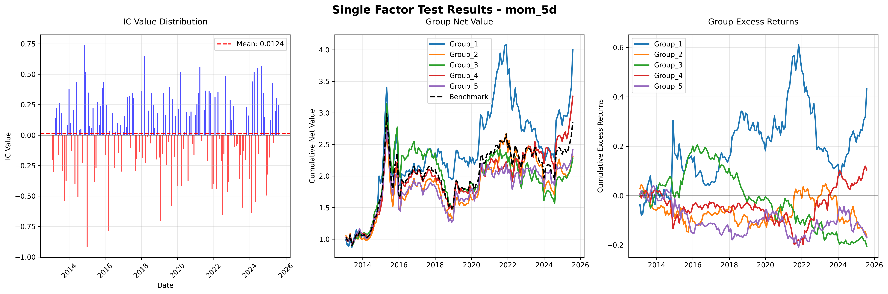
<Figure size 1920x1440 with 0 Axes>
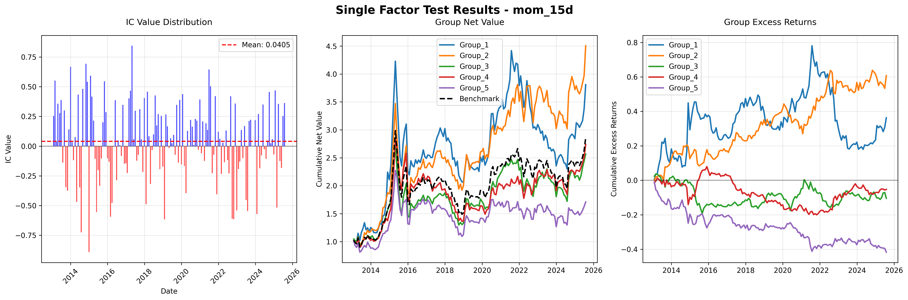
<Figure size 1920x1440 with 0 Axes>
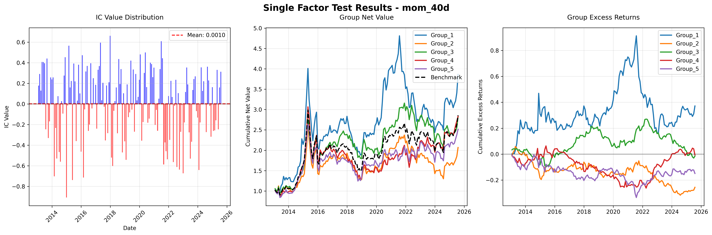
<Figure size 1920x1440 with 0 Axes>
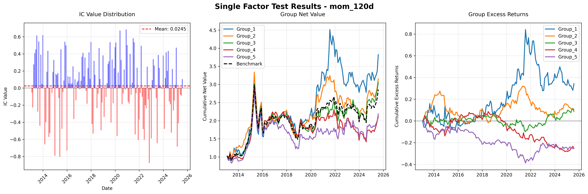
<Figure size 1920x1440 with 0 Axes>
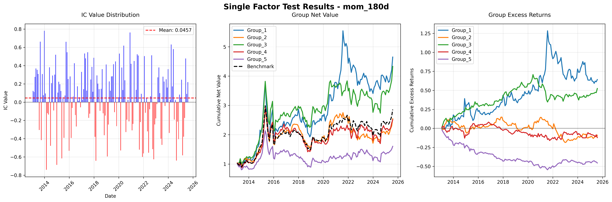
<Figure size 1920x1440 with 0 Axes>
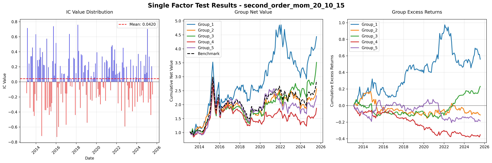
<Figure size 1920x1440 with 0 Axes>
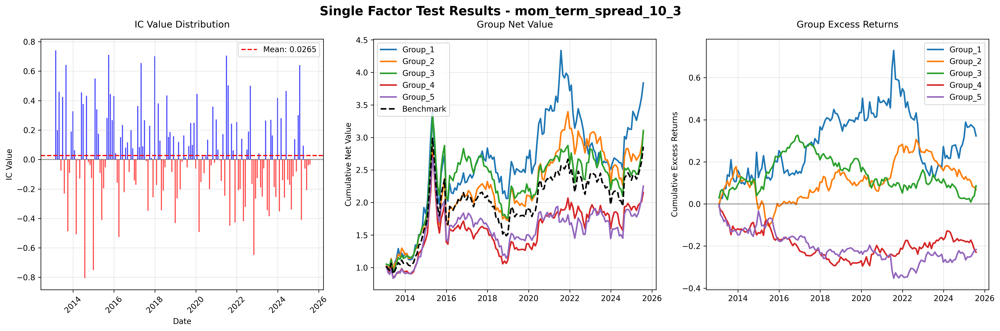
<Figure size 1920x1440 with 0 Axes>
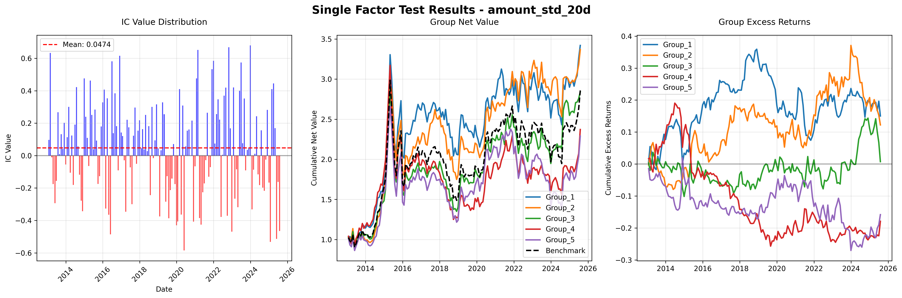
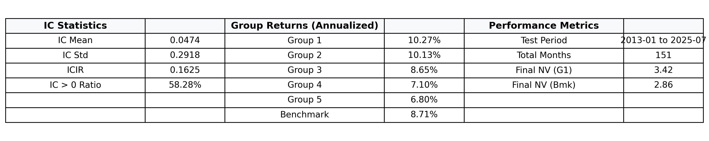
<Figure size 1920x1440 with 0 Axes>
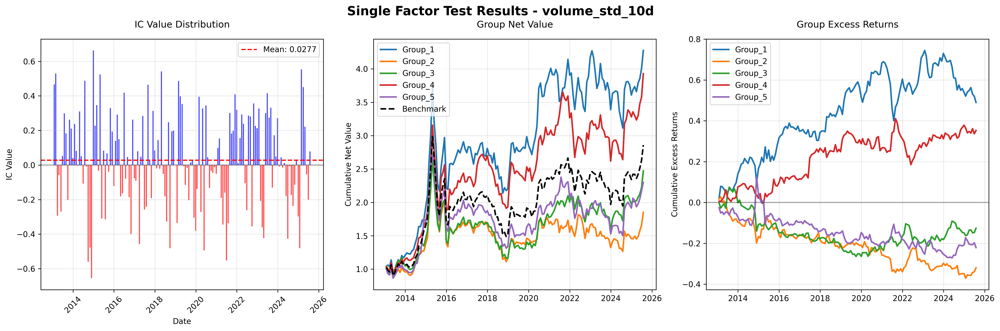
<Figure size 1920x1440 with 0 Axes>
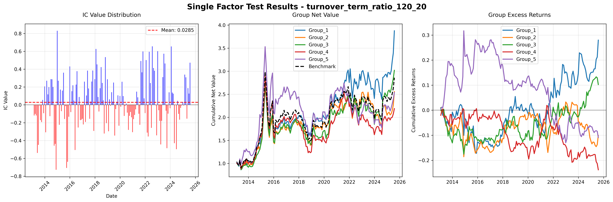
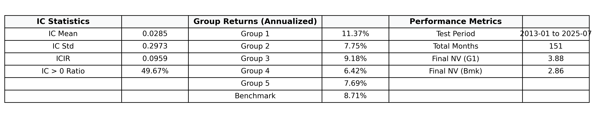
<Figure size 1920x1440 with 0 Axes>
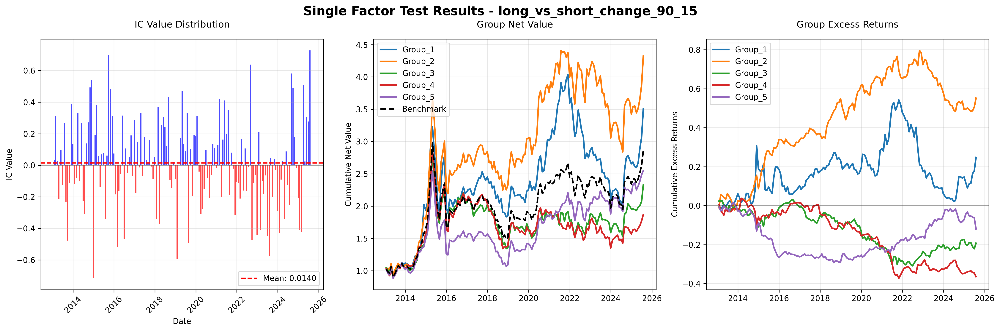
<Figure size 1920x1440 with 0 Axes>
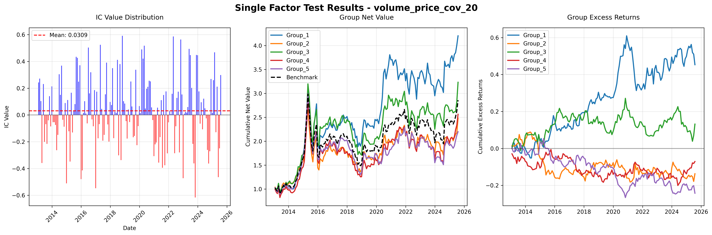
<Figure size 1920x1440 with 0 Axes>
<Figure size 1920x1440 with 0 Axes>
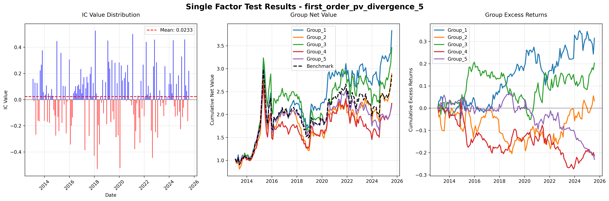
<Figure size 1920x1440 with 0 Axes>
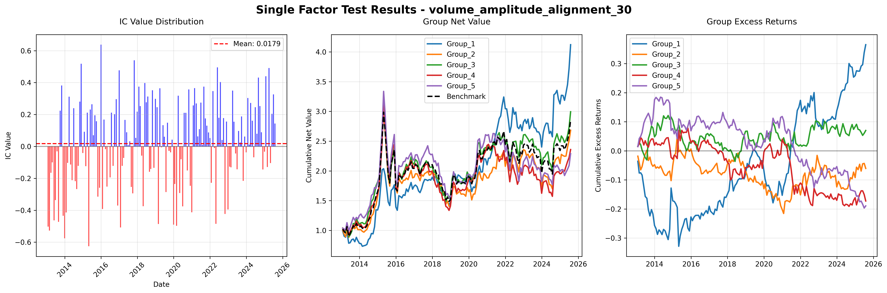
<Figure size 1920x1440 with 0 Axes>
Composite Factor#
# Initialize an empty DataFrame to store the composite factor
composite_factor = pd.DataFrame()
# Create a list to store all ranked factors
ranked_factors = []
for good_factor_name in good_factors_lst:
# Pivot each factor to get time x industry format
good_factor = csi_daily[good_factor_name].reset_index().pivot(
index='tradts',
columns='ind_code',
values=good_factor_name
)
# Rank each factor cross-sectionally (by date) in descending order
# Higher rank means better (higher) factor value
ranked_factor = good_factor.rank(axis=1)
ranked_factors.append(ranked_factor)
# Combine all ranked factors with equal weights
if ranked_factors:
# Sum all ranked factors (equal weighting)
composite_factor = sum(ranked_factors) / len(ranked_factors)
composite_factor
| ind_code | CI005001 | CI005002 | CI005003 | CI005004 | CI005005 | CI005006 | CI005007 | CI005008 | CI005009 | CI005010 | CI005011 | CI005012 | CI005013 | CI005014 | CI005015 | CI005016 | CI005017 | CI005018 | CI005019 | CI005020 | CI005021 | CI005022 | CI005023 | CI005024 | CI005025 | CI005026 | CI005027 | CI005028 |
|---|---|---|---|---|---|---|---|---|---|---|---|---|---|---|---|---|---|---|---|---|---|---|---|---|---|---|---|---|
| tradts | ||||||||||||||||||||||||||||
| 2013-01-04 | 13.433333 | 15.466667 | 11.733333 | 14.600000 | 15.066667 | 16.466667 | 17.500000 | 13.000000 | 14.400000 | 15.800000 | 13.333333 | 16.866667 | 17.933333 | 14.400000 | 10.666667 | 16.266667 | 13.800000 | 12.400000 | 12.500000 | 12.566667 | 14.866667 | 16.833333 | 15.466667 | 14.700000 | 14.666667 | 11.800000 | 13.400000 | 16.066667 |
| 2013-01-07 | 11.733333 | 14.900000 | 10.000000 | 15.200000 | 15.233333 | 16.966667 | 17.233333 | 14.733333 | 14.800000 | 15.166667 | 13.533333 | 17.500000 | 16.933333 | 14.466667 | 11.833333 | 16.266667 | 14.233333 | 12.266667 | 12.566667 | 13.666667 | 15.733333 | 17.300000 | 16.033333 | 13.033333 | 14.366667 | 10.633333 | 13.400000 | 16.266667 |
| 2013-01-08 | 12.833333 | 13.600000 | 10.766667 | 15.200000 | 15.233333 | 15.700000 | 15.600000 | 14.000000 | 13.233333 | 15.333333 | 13.933333 | 17.733333 | 17.466667 | 16.100000 | 12.566667 | 15.566667 | 14.166667 | 13.666667 | 11.766667 | 14.466667 | 15.233333 | 16.466667 | 15.533333 | 12.666667 | 13.966667 | 12.066667 | 14.666667 | 16.466667 |
| 2013-01-09 | 12.133333 | 15.533333 | 11.166667 | 14.600000 | 15.933333 | 16.100000 | 16.466667 | 13.300000 | 14.266667 | 14.200000 | 14.600000 | 16.500000 | 17.000000 | 15.266667 | 11.466667 | 15.466667 | 14.700000 | 11.666667 | 13.866667 | 15.266667 | 14.466667 | 16.066667 | 15.266667 | 12.666667 | 13.866667 | 13.966667 | 14.933333 | 15.266667 |
| 2013-01-10 | 11.533333 | 12.533333 | 11.600000 | 14.066667 | 16.400000 | 15.433333 | 15.266667 | 14.166667 | 14.400000 | 15.400000 | 15.566667 | 16.866667 | 15.266667 | 15.833333 | 12.600000 | 15.333333 | 13.600000 | 12.866667 | 13.800000 | 14.700000 | 14.533333 | 14.633333 | 16.400000 | 13.800000 | 15.000000 | 14.466667 | 14.800000 | 15.133333 |
| ... | ... | ... | ... | ... | ... | ... | ... | ... | ... | ... | ... | ... | ... | ... | ... | ... | ... | ... | ... | ... | ... | ... | ... | ... | ... | ... | ... | ... |
| 2025-08-25 | 10.733333 | 13.600000 | 17.100000 | 11.266667 | 12.433333 | 13.933333 | 11.233333 | 15.933333 | 15.400000 | 17.833333 | 14.533333 | 15.166667 | 16.266667 | 15.533333 | 14.900000 | 11.800000 | 12.933333 | 14.600000 | 12.900000 | 15.266667 | 13.766667 | 13.766667 | 13.000000 | 11.700000 | 16.466667 | 19.300000 | 17.633333 | 17.000000 |
| 2025-08-26 | 11.333333 | 13.166667 | 17.366667 | 11.000000 | 12.066667 | 15.333333 | 12.666667 | 15.500000 | 14.933333 | 17.000000 | 14.733333 | 15.000000 | 15.600000 | 16.033333 | 15.400000 | 11.233333 | 13.133333 | 13.433333 | 12.433333 | 17.200000 | 12.766667 | 12.966667 | 11.733333 | 12.933333 | 16.800000 | 19.066667 | 16.966667 | 18.200000 |
| 2025-08-27 | 12.000000 | 12.133333 | 16.466667 | 12.600000 | 10.866667 | 14.600000 | 12.400000 | 15.600000 | 14.066667 | 15.000000 | 14.866667 | 15.266667 | 16.233333 | 15.733333 | 17.133333 | 12.533333 | 14.066667 | 13.133333 | 14.133333 | 16.466667 | 13.900000 | 12.666667 | 11.466667 | 12.866667 | 15.933333 | 19.466667 | 16.066667 | 18.333333 |
| 2025-08-28 | 12.133333 | 12.100000 | 17.633333 | 11.266667 | 11.733333 | 15.000000 | 12.500000 | 15.333333 | 13.366667 | 16.933333 | 15.566667 | 17.600000 | 16.966667 | 14.233333 | 16.066667 | 12.733333 | 11.800000 | 13.333333 | 12.733333 | 14.266667 | 14.200000 | 14.166667 | 11.233333 | 12.200000 | 17.366667 | 19.200000 | 16.400000 | 17.933333 |
| 2025-08-29 | 12.400000 | 11.966667 | 17.600000 | 10.733333 | 12.500000 | 16.000000 | 12.000000 | 15.133333 | 13.400000 | 15.533333 | 16.733333 | 17.800000 | 16.666667 | 15.000000 | 16.533333 | 11.333333 | 12.600000 | 13.733333 | 14.133333 | 16.600000 | 13.533333 | 13.366667 | 10.133333 | 10.800000 | 16.966667 | 18.733333 | 16.233333 | 17.833333 |
3075 rows × 28 columns
def single_factor_test_optimized_new(factor_df, factor_name, price_df, top_n=5):
"""
Execute comprehensive single factor testing (monthly frequency)
Parameters:
factor_df (DataFrame): Daily frequency factor values, index as dates, columns as industry codes
price_df (DataFrame): Daily frequency industry prices, index as dates, columns as industry codes
top_n (int): Number of top industries for long position, default is 5
Returns:
dict: Dictionary containing IC analysis results and group test results
"""
# Copy data to avoid modifying original data
factor_data = factor_df.copy()
price_data = price_df.copy()
# Ensure index is DatetimeIndex
factor_data.index = pd.to_datetime(factor_data.index)
price_data.index = pd.to_datetime(price_data.index)
# 1. Data preprocessing: Convert to monthly frequency
# Factor values: Take the last trading day of each month
factor_monthly = factor_data.groupby(pd.Grouper(freq='M')).tail(1)
# Returns: Calculate next month's returns
price_month_end = price_data.groupby(pd.Grouper(freq='M')).tail(1)
returns_next_month = price_month_end.pct_change().shift(-1) # Next month returns
# 2. IC Value Analysis
ic_results = []
ic_values = []
for date in factor_monthly.index:
if date in returns_next_month.index:
# Get current month's factor values and next month's returns
factor_values = factor_monthly.loc[date]
future_returns = returns_next_month.loc[date]
# Calculate Spearman rank correlation coefficient (IC value)
valid_data = pd.concat([factor_values, future_returns], axis=1).dropna()
if len(valid_data) > 5: # Ensure sufficient data points
ic, p_value = spearmanr(valid_data.iloc[:, 0], valid_data.iloc[:, 1])
ic_results.append({
'date': date,
'IC': ic,
'p_value': p_value
})
ic_values.append(ic)
ic_series = pd.DataFrame(ic_results).set_index('date')['IC']
# 3. Factor Group Testing
group_results = {f'Group_{i}': [] for i in range(1, 6)}
benchmark_returns = [] # Equal-weighted benchmark returns
group_dates = []
for date in factor_monthly.index:
if date in returns_next_month.index:
# Get current factor values and next month returns
current_factors = factor_monthly.loc[date]
next_returns = returns_next_month.loc[date]
# Remove industries with NaN values
valid_data = pd.concat([current_factors, next_returns], axis=1).dropna()
if len(valid_data) < 10: # Skip if too few valid industries
continue
current_factors = valid_data.iloc[:, 0]
next_returns = valid_data.iloc[:, 1]
# Sort by factor value and group into 5 groups
ranked_industries = current_factors.sort_values(ascending=False)
group_size = len(ranked_industries) // 5
group_returns = {}
for i in range(5):
start_idx = i * group_size
if i == 4: # Last group includes all remaining industries
end_idx = len(ranked_industries)
else:
end_idx = (i + 1) * group_size
group_indices = ranked_industries.index[start_idx:end_idx]
group_return = next_returns[group_indices].mean()
group_returns[f'Group_{i+1}'] = group_return
# Calculate equal-weighted benchmark returns
benchmark_return = next_returns.mean()
# Store results
for group_name, ret in group_returns.items():
group_results[group_name].append(ret)
benchmark_returns.append(benchmark_return)
group_dates.append(date)
# Convert group results to DataFrame
group_returns_df = pd.DataFrame(group_results, index=group_dates)
group_returns_df['Benchmark'] = benchmark_returns
# Calculate cumulative returns
cumulative_returns = (1 + group_returns_df).cumprod()
# Calculate excess returns (relative to benchmark)
excess_returns = group_returns_df.subtract(group_returns_df['Benchmark'], axis=0)
cumulative_excess = (1 + excess_returns).cumprod() - 1 # Cumulative excess returns
# 4. Plot charts with English labels
# ====================== Vertical Chart Layout ======================
# Create vertical layout figure canvas
fig_charts, axes = plt.subplots(4, 1, figsize=(12, 20), dpi=600)
fig_charts.suptitle(f'Single Factor Test Results - {factor_name}',
fontsize=16, fontweight='bold', y=0.98)
# Chart 1: IC Value Distribution
colors = ['red' if x < 0 else 'blue' for x in ic_series.values]
bars = axes[0].bar(ic_series.index, ic_series.values, color=colors, alpha=0.7, width=20)
axes[0].axhline(y=ic_series.mean(), color='red', linestyle='--',
label=f'Mean: {ic_series.mean():.4f}')
axes[0].axhline(y=0, color='black', linestyle='-', alpha=0.3)
axes[0].set_title('IC Value Distribution', pad=15)
axes[0].set_ylabel('IC Value')
axes[0].set_xlabel('Date')
axes[0].legend()
axes[0].grid(True, alpha=0.3)
axes[0].tick_params(axis='x', rotation=45)
# Chart 2: Group Net Value
line_colors = ['#1f77b4', '#ff7f0e', '#2ca02c', '#d62728', '#9467bd']
for i, color in enumerate(line_colors, 1):
axes[1].plot(cumulative_returns.index, cumulative_returns[f'Group_{i}'],
color=color, label=f'Group_{i}', linewidth=2)
axes[1].plot(cumulative_returns.index, cumulative_returns['Benchmark'],
color='black', linestyle='--', label='Benchmark', linewidth=2)
axes[1].set_title('Group Net Value', pad=15)
axes[1].set_ylabel('Cumulative Net Value')
axes[1].legend()
axes[1].grid(True, alpha=0.3)
# Chart 3: Excess Returns
for i, color in enumerate(line_colors, 1):
axes[2].plot(cumulative_excess.index, cumulative_excess[f'Group_{i}'],
color=color, label=f'Group_{i}', linewidth=2)
axes[2].axhline(y=0, color='black', linestyle='-', alpha=0.3)
axes[2].set_title('Group Excess Returns', pad=15)
axes[2].set_ylabel('Cumulative Excess Returns')
axes[2].legend()
axes[2].grid(True, alpha=0.3)
# Chart 4: Table Area
axes[3].axis('off')
# Calculate annualized returns
annual_factor = 12
returns_data = {}
for i in range(1, 6):
returns_data[f'Group_{i}'] = cumulative_returns[f'Group_{i}'].iloc[-1] ** (annual_factor/len(cumulative_returns)) - 1
returns_data['Benchmark'] = cumulative_returns['Benchmark'].iloc[-1] ** (annual_factor/len(cumulative_returns)) - 1
# Create table data (adjusted according to format)
table_data = [
["IC Statistics", "", "Group Returns (Annualized)", "", "Performance Metrics", ""],
["IC Mean", f"{ic_series.mean():.4f}", "Group 1", f"{returns_data['Group_1']:.2%}",
"Test Period", f"{cumulative_returns.index[0].strftime('%Y-%m')} to {cumulative_returns.index[-1].strftime('%Y-%m')}"],
["IC Std", f"{ic_series.std():.4f}", "Group 2", f"{returns_data['Group_2']:.2%}",
"Total Months", f"{len(cumulative_returns)}"],
["ICIR", f"{ic_series.mean()/ic_series.std():.4f}", "Group 3", f"{returns_data['Group_3']:.2%}",
"Final NV (G1)", f"{cumulative_returns['Group_1'].iloc[-1]:.2f}"],
["IC > 0 Ratio", f"{(ic_series > 0).mean():.2%}", "Group 4", f"{returns_data['Group_4']:.2%}",
"Final NV (Bmk)", f"{cumulative_returns['Benchmark'].iloc[-1]:.2f}"],
["", "", "Group 5", f"{returns_data['Group_5']:.2%}", "", ""],
["", "", "Benchmark", f"{returns_data['Benchmark']:.2%}", "", ""]
]
# Render table (adjusted parameters to avoid overflow)
table = axes[3].table(
cellText=table_data,
cellLoc='center',
colWidths=[0.14, 0.10, 0.16, 0.10, 0.16, 0.10],
loc='center',
bbox=[0, 0.1, 1, 0.8]
)
# Table style settings
table.auto_set_font_size(False)
table.set_fontsize(10) # Reduce font size to avoid overflow
table.scale(1, 2.0) # Adjust scaling ratio
# Set header style
for i in range(6):
cell = table[(0, i)]
cell.set_text_props(fontsize=11, weight='bold')
cell.set_facecolor('#f8f9fa')
# Set cell height
for key, cell in table.get_celld().items():
cell.set_height(0.15)
cell.set_text_props(fontsize=10) # Ensure consistent font size for all cells
plt.tight_layout()
plt.subplots_adjust(top=0.95)
plt.show()
# ====================== Return Results ======================
results = {
'IC_series': ic_series,
'cumulative_returns': cumulative_returns,
'cumulative_excess_returns': cumulative_excess,
'group_returns': group_returns_df,
'ic_statistics': {
'mean': ic_series.mean(),
'std': ic_series.std(),
'ir': ic_series.mean() / ic_series.std(),
'positive_ratio': (ic_series > 0).mean()
},
'performance_metrics': {
'test_period': f"{cumulative_returns.index[0].strftime('%Y-%m')} to {cumulative_returns.index[-1].strftime('%Y-%m')}",
'total_months': len(cumulative_returns),
'final_net_value_group1': cumulative_returns['Group_1'].iloc[-1],
'final_net_value_benchmark': cumulative_returns['Benchmark'].iloc[-1]
}
}
return results
composite_factor_result_new = single_factor_test_optimized_new(composite_factor, 'composit_factor', inds_price)